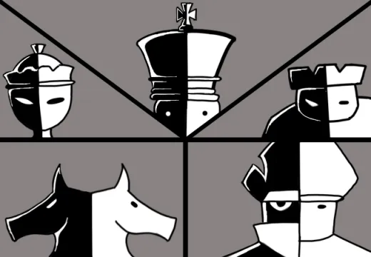

The KING would have absolute power over each of the new Carapacians, the law, and a little more. But whenever the King was absent from their new home, the QUEEN would rule in place of him. Next in society would be a someone who creates and enforces LAWS, this person would be called the ROOK. The ROOK has supreme power over the police, but is still under the King and Queen. During battle they typically act as a COMMANDER, leading most of the charges. But since they are typically of world in THE WAR, they have someone underneath them that enforces the law on Derse/Prospit, the KNIGHT. Finally they have the BISHOP, someone who communicates the PROPHECY OF SKAIA, and act as the advisors to all. Their role is to help the citizens lead a fulfilling life, and just help citizens with their day to day lives.
> ==>